Research Area
Distinguished Professor and Research Director with 35+ years of expertise in Electrical and communications Engineering, signal and data Processing, renewable Energy Systems, and sustainable development. Director of ATSSEE Research Laboratory and Coordinator of the Master SRT Program in FST. Expert in E-Learning and accreditation. Proven track record in international research collaboration and academic leadership with extensive experience in project management, quality systems, and digital innovation.
Professional Experience
Senior Professor & Research Director
University of Tunis Manar, Faculty of Sciences of Tunis (FST)
January 2008 - Present | Tunis, Tunisia
- Director of ATSSEE Research Laboratory
- Coordinator of Professional Master SRT program
- Coordinator of research projects (VRR,PAQ,P2ES,H2020,...)
- Supervised 50+ PhD students and published 130+ research papers
- Expert evaluator with ANRP, ATEA and NCAAA
Associate Professor (Maitre de Conferences)
Faculty of Sciences of Tunis (FST)
2002 - 2007 | Tunis, Tunisia
- Teaching
- Developed curriculum for STIC and EEA license and Master Program
- Coordinated Professional Master in Communication Systems
- Established international cooperation with European universities
Assistant Professor
Faculty of Sciences of Tunis (FST)
1991 - 2002 | Tunis, Tunisia
- Teaching
- Developed laboratory facilities for engineering education
Engineer & Assistant Director
ENIT (National School of Engineers of Tunis)
1988 - 1991 | Tunis, Tunisia
- Assistant to Director of Industrial Engineering Department
- Coordinated industry partnerships and internship programs
Pedagogic Experiences
Teaching at FST
Faculty of Sciences of Tunis
Since 1991 | Tunis, Tunisia
Teaching in Master & license STIC, EEA, Engineering programs, and doctorate thesis
supervision
Online Master Coordination
Virtual University of Tunis (UVT)
2008 - 2013 | Tunisia
Coordination of the online Master at the virtual university of Tunis (UVT). Development of
tools E-learning on the Platform from EAD: moodle
Education
HDR (Habilitation à Diriger des Recherches)
ENIT - National School of Engineers of Tunis
2002 | Tunis, Tunisia
Electrical Engineering - Qualification to supervise doctoral research and lead research
teams
PhD in Electrical Engineering
ENIT - National School of Engineers of Tunis
1997 | Tunis, Tunisia
Master in Automatic & Electric Engineering
ENIT - National School of Engineers of Tunis
1991 | Tunis, Tunisia
Engineering Diploma
ENIT - National School of Engineers of Tunis
1987 | Tunis, Tunisia
Engineering degree with specialization in electrical and industrial engineering
Baccalaureate Math Technique
Tunisia
1982 | Tunisia
Responsibilities
Director of Department of Physics
Faculty of Sciences of Tunis (FST)
2008 - 2011 | Tunis, Tunisia
Director of Department of physics from 2008 to 2011
Director of Research Laboratory
ATSSEE Research Laboratory
Since 2017 | Tunis, Tunisia
Director of the research laboratory "Electric and renewables energy systems" at the FST
Since 2017
President of the National Committee for the Recruitment of Associate Professors
Ministry of Higher Studies and Research
2016 - 2017 | Tunisia
President of the National committee of Promotion of professors of the Ministry of high
studies and research from 2016 to 2017
National Committee Member
Ministry of Higher Studies and Research
2006 - 2007 | Tunisia
Member of the National Committee of Recruitment of the Assistants during the period of
2006 And 2007
Coordinator of the Professional Master's Program
Faculty of Sciences of Tunis (FST)
Since 2003 | Tunis, Tunisia
Coordinator of the Professional Master "system of communications" at FST Since 2003
Coordinator of the STIC license and the N2TR Master's Program
Virtual University of Tunis
2008 - 2013 | Tunisia
Coordinator of the online licenses STIC and Master Pro N2TR at the virtual university of
Tunis from 2008 to 2013
Online Master TIC Coordinator
National Center for Continuing Education and Professional Promotion (CNFCPP)
Since 2017 | Tunisia
Responsible of Master TIC in line with the National Center for Continuing Education and
Professional Promotion CNFCPP since 2017
Ministry Project Evaluator
DGRST - Ministry of Higher Education
2017, 2020, 2019, 2022, 2023 | Tunisia
Charged by the ministry DGRST for the assessment and evaluation of projects VRR 2017,
VR2020, PAQ 2019, PEIC 2022 and PE2S 2023
Member of the National Committee of Engineering Programs
DGET of MESRS
2018 | Tunisia
Member of the national sectoral commission of studies And programs of training of
engineers with of the DGET of MESRS
ANPR Expert
National Agency of Research Promotion
2023 - 2025 | Tunisia
Expert with the ANPR (national Agency of research promotion) for the evaluation of projects
and Post-doc candidates
ATEA Expert
National Agency of Accreditation
2025 - now | Tunisia
E-Learning Expert
Various Institutions
2008 - 2013 | Tunisia
Expert in E-Learning and Coordinator of teaching E-Learning in the virtual university from
2008 to 2013
International Conference Organizer
Various International Venues
1999 - 2024 | International
Member of the committee of organization and reading of several conferences national And
international (JT'99, CTGE2004, ICOSE2006, JTM2007, IPW2013, ICGE 2017, ICGE 2019, IC-ASET
2020 & 2021, 2023, ATSIP 2024, ....)
Key Projects
LEAP-RE H2020 Euro-African Project
2022-2025
Partner in international project developing hybrid PV solar cooker technology.
Collaboration with Spain, Portugal, Italy, Germany, Tunisia, Algeria, Morocco.
ARICA Arab Project : Sustainable Development Research project with the Arab League
2023-2025
sustainable smart model for the management of water and energy resources in north africa.
PAQ-Collabora Smart Grid Migration
2019-2023
Coordinator of the project : electrical network migration towards smart grid technology.
Partners: ATSSEE, FST, Tunisie Telecom, STEG, MESRS.
VRR Renewable Energy Integration
2017-2020
Coordinator of research valorization project improving renewable energy penetration
and integration in Tunisian electrical network. Partners: ATSSEE, MESRS, FST, STEG.
COVID-19 E-Health Application
2020-2022
Coordinator of e-health application development for elderly people during pandemic.
Partners: ATSSEE, FST, AFA Medical Center, MESRS.
Administrative Responsibilities
- Director of ATSSEE Research Laboratory - Electric and Renewable Energy Systems (2017-Present)
- Coordinator of Professional Master SRT - FST (2017-2024)
- Director of Physics Department - FST (2008-2011)
- President of National Committee - Professor Promotion, MESRS (2016-2017)
- Coordinator of Online Master TIC - Virtual University of Tunis (2008-2013)
- Expert Evaluator - ANPR, MESRS research projects and post-doc candidates
- Member of National Sectoral Commission - Engineering Training Programs, DGET-MESRS
- Representative of MED-CAMPUS 15 Network - Tunisia (1995-1998)
Experiences in Certification and Accreditation
International Program Evaluation & Accreditation
NCAAA, ATEA
Ongoing | International
member in international committees of program Evaluation & Accreditation (NCAAA, ATEA, ...)
Member of the quality Committee for Master's and Engineering Training
Faculty of Sciences of Tunis
2024-2025 | Tunis, Tunisia
Participating member of the FST committee for the accreditation for master's and engineering
training of the cluster of computer science, Electronic and Communication Engineering
2024-2025
ANPR Research Project Expert
National Agency for Research Promotion
2024-2025 | Tunisia
Expert with ANPR (National Agency for the Promotion of Research) for the evaluation of
research projects mobidoc and post-doc, ARESSE green energy project
Training & Certifications
- Digital Marketing Training (2024)
- Project Management Training - AGILE, SCRUM (2023)
- ISO 9001 and ISO 14001 Quality Management System (2022)
- Embedded LINUX Certification Training (2021)
- E-Learning Expert Certification
- Machine Learning NVIDIA (2025)
Partnership and Socioeconomic Collaboration
8.1. R&D Projects Carried Out
| Year | Kind of Project | Title of Project |
|---|---|---|
| 1995-1998 | MEDCAMPUS 15 (Partner) | Project of training Euro-Mediterranean: training on PV systems |
| 2000-2002 | CMCU cooperation Tunisia - French (Partner) | converters static multi levels |
| 2009-2012 | Cooperation UTM-University of Nantes (Partner) | thesis in joint supervision University of Rennes & Univ Tunis Manar : CHERIF (Tunisia) + BASSEL S (Brest-France) |
| 2011-2014 | Project of cooperation Tunisia - Morocco UTMB (coordinator) | Follow up of the facilities electrification rural in Tunisia and in Morocco ( ATSSEE, FST , UTM , Univ Med5, FSO) |
| 2017-2020 | Project of research valorization VRR (coordinator) | Improvement of the penetration rate And integration ratio of the Renewables sources in Tunisian electric Network (ATSSEE, MESRS, FST + STEG) |
| 2017 & 2019 | AUF (Association University of the French-speaking countries) | Support for the organization of workshops ( ATSSEE, UTM, FST , AUF) |
| 2019-2023 | PAQ-Collabora (coordinator) | Migration of STEG network towards smartgrid ( ATSSEE, FST, Tun Telecom, STEG, MESRS) |
| 2020-2022 | Project COVID-19 (coordinator) | E-health application for elderly people( ATSSEE, FST, AFA medical center, MESRS) |
| 2022-2025 | Project H2020 Euro-African LEAP-RE (Partner) | Hybrid PV solar cooker (Spain, Portugal, Italy, Germany, Tunisia, Algeria, Morocco) |
| 2023-2024 | Project of excellencescientist P2ES (coordinator) | Smart green Agriculture |
| 2024-2026 | Arab League ARICA Project (coordinator) | Sustainable development model for the management of energy and water resources in the Arab Maghreb Tunisia + Algeria + Morocco + Libya ) |
8.2. Signed Agreements
| Duration of the convention | Partner |
|---|---|
| 2017-2021 | ECOPARC technological Park of energy of Borj cedria |
| 2016-2019 | Medical Association AFA |
| 2017 | STEG international |
| 2016-2020 | STEG |
| 2019-2023 renewal | Tunisia Telecom TT |
| 2017-2021 | Fac of the science of Oujda University Med 1 - Morocco |
| 2017- 2019 | AUF |
| 2018-2023 renewal | Horizon-Data company |
| 2021-2026 | CETIME company |
| 2022-2025 | ACTIA company |
| 2022-2026 | University of Loughborough -GB |
| 2023-2025 | ANPR : Agency National of Promotion of Research |
8.3. Cooperation with International Laboratories
| Laboratory | Director | lieu | université |
|---|---|---|---|
| LETSER | Pr Kassmi Khalil | Faculté des Sciences d'Oujda | Université de Med premier Maroc |
| Electric Power Systems and Microgrids | Pr Guerrero J.M | Faculty of Engineering and Science de Alborg | Alborg Danemark |
| SAMOVA CNRS-UMR5505 | Pr. Julien Pinquier | IRIT-Toulouse | Université Toulouse III Paul sabatier |
| L2P-Lille | Pr. Bruno FRANCOIS | Ecole Centrale de Lille | Université de Lille |
| POLARIS IETR-CNRS | Pr. MERIC Stéphane | INSA-Rennes | Université de Rennes |
| ESTIB Télécom Bretagne, Brest | Prof. BASSEL Solaiman | ESTIB Télécom Bretagne | Université de Nantes |
| JTIM-CNR National Research Council of Italy | Alberto Figoli | ISTITUTO DE TECNOLOGIA | Università della Calabria |
| FHR de Fraunhofer | Dr. Reinhold Herschel | Fraunhofer Institut für Hochfrequenzphysik dRadar technik | Fraunhofer Allemagne |
8.4. Patent
Patent for Autonomous Electric Car
Title: Patent for autonomous electric car powered by green hydrogen powered by PEMFC
Reference: TN2023/0007 of 12/1/2023
Description: Google Drive link of the prototype of the hydrogen electric car from the lab
Prototype Documentation:
https://drive.google.com/drive/folders/1LBfO9uiz9QKho8xeeT_H8lW9Fzc70YwNScientific Production
137
Publications in Indexed and Impacted Journals
65
Communications in International Conferences
03
Published Books (CPU)
46
PhD
Thesis Supervised
Direction & Supervision
38
Masters of Research
Supported
55
Professional Masters STR
Supported
Publications (Last 5 Years)
| Title | Authors | Année | Journal |
|---|---|---|---|
| Design and performances analysis of a PEM fuel cell for green Hydrogen vehicles Doi : 10.1108/wje-10-2024-0584/full/html | A. Khadhraoui,A. cherif | 2025 | World journal ofengineering (Q3) January 2025 |
| Energy management of a Photovoltaic PtE and PtG Hydrogen Storage station | D. Hidouri, & Kassmi K & A.cherif | 2025 | World Electric Vehicle Journal , MDPI (Q2) April 2025 |
| Clustering for Lifetime Enhancement in Wireless Sensor Networks | K. khediri , djabour DCherif A | 2025 | Telecom , MDPI May 2025 Q2 |
| Early detection and classification of brest cancer with deep learning | A. Miled , Cherif A | 2025 | ETASR journal 2025 , vol 14(5) : Q2 |
| Electric Vehicle Charging Infrastructure: Impacts andFuture Challenges of Photovoltaic Integration withExamples from a Tunisian Case | Nouha Mansouri, SihemNasri, Aymen MnassriAbderezak Lashab, Juan C.Vasquez, Adnane Cherif,Hegazy Rezk | 2025 | World Electr. Veh.J. 2025, 16(7), 349; https://doi.org/10.3390/wevj16070349 |
| V2G-Enabled Smart Energy Management forSustainable Home Electrification | Sihem Nasri , Nouha Mansouri, , Aymen Mnassri, Adnane Cherif | 2025 | 7th IEEE Global Power, Energyand Communication Conference , June 2025 DOI: 10.1109/GPECOM65896 .2025.11061960 |
| Optimized Intelligent Energy Management for IsolatedSmart Homes with Solar, Hydrogen, and V2H Integration | Nouha Mansouri,SihemNasri , Aymen Mnassri, Adnane Cherif | 2025 | 7th IEEE Global Power, Energyand Communication Conference , June 2025 DOI: 10.1109/GPECOM65896 .2025.11061941 |
| Modeling and Simulation of a Renewable Energy PV/PEM with Green Hydrogen Production | D. Hidouri, Khadhraoui & Cherif A. | 2024 | IJASR , Vol. 4 No 6, pp. 2543-2548 |
| The Performance of Stable Zones Protocol for Heterogeneous Wireless Sensor Networks | Khedhiri K., Dabbour & Cherif A. | 2024 | ITASR Vol. 14 No 4 , pp. 15876-15881, 2024 |
| Design and Implementation of a Smart PV Diagnostic Greenhouse for Sustainable Agriculture in Tunisia | B. Maroueni, M. chakabala M. bouadila Cherif A. | 2024 | ITASR Vol. 14(4), pp. 14441-14449, 2024 |
| A New Robust Blind Crypto-Watermarking Method for Medical Images Security | D. boussif M.boulares, N. Aloui , A.Cherif | 2024 | IJCSNS Int Journal of Computer Science and Network Security, VOL.24 No.3, March 2024 |
| Real-time voice-controlled human machine interface system for disabled people | A.Mnassari, S. Nasri, M.Boussif & A.cherif | 2024 | International Journal of Vehicle Information and Communication Systems, Vol. 9, No. 1, pp.61-102, 2024 |
| Effects of Temperature and Solar Irradiation Variations on The Performances of Photovoltaic Pumping Systems | Jraidi M, cherif A | 2024 | New Energy Exploitation and Application, Vol 3 Issue 1: June 2024 |
| Detection and classification of Parkinson's Diseases by Automatic Speech Analysis | A.Khili, B.Lamia, A. Cherif | 2024 | IEEE conference ATSIP 2024 July 11-13, 2024 |
| Smart Grid 2.0: Modeling Peer-to-Peer Trading Community and Incentives for Prosumers in the Transactive Energy Grid | M.Khayyat, S.Ben Slama | 2024 | ITASR , Vol. 14 No 2 April 2024 |
| Early Detection of Alzheimer's Disease Using VOI Mean Measures in New Multivariate Approach | K.Dabebi, A.khili, Cherif.A | 2023 | IEEE International Conference on Advanced Systems and Emergent Technologies IC ASET, Hammamet |
| 5G/6G-V2X implementation for Sustainable and Intelligent Transport | A.Jouini ,A.Cherif | 2023 | 23rd Mediterranean Microwave Symposium, MMS 2023, Tunis |
| A Smart Wheelchair for Autonomous Movements of Disabled People | B Lamia, A cherif | 2023 | International Conference on Academic Studies in Technology and Education ICASTE'23, Antalya 2023 |
| Integration of Renewable Energies into the Smart Grid Electricity network | B Lamia, A cherif | 2023 | IEEE International Conference on Artificial Intelligence & Green Energy (ICAIGE), October 2023. DOI: 10.1109/ICAIGE58321.2023.10346488 |
| A Review of Non Invasive Methods of Brain Activity Measurements via EEG Signals Analysis | D. Turki, B.Lamia, A cherif | 2023 | IEEE International Conference on Advanced Systems and Emergent Technologies (IC ASET), 2023 |
| Innovative Grid-Connected PhotovoltaicSystems Control Based on Complex-Vector-Filter | Mansouri.N, A.Lachhab, Josep M. Guerrero,A.Cherif | 2022 | Energies. DOI: 10.3390/en15186772 |
| Electric Vehicle Energy ManagementStrategy Based on Smart Cities | khadhraoui A., Cherif A. | 2022 | Advances in Intelligent Systems Research, vol. 175, pp. 1-11, 2022 |
| New Backstepping-DSOGI hybridcontrol applied to a Smart-Grid Photovoltaic System | Nebili.S, ben abdallah I, Cherif Adnen | 2022 | IJCSNS International Journal of Computer Science and Network Security, Vol.22 No.3, April 2022 |
| Energy Management and Performance Evaluation of Real-Time Based Electric Vehicle | khadhraoui A., SelimTarek,Cherif, A | 2022 | IJCSNS International Journal of Computer Science and Network Security, VOL.22 No.3, March 2022 |
| Energy Management of a Hybrid Electric Vehicle | khadhraoui A. SelimTarek,Cherif,A | 2022 | Applied Science Research, Vol. 14, No. 4, 2022 pp. 6891 |
| Advanced real time IoT Eco-Driving Assistant System | Jouini A, Hassaoui S, A.Cherif | 2022 | IJCSNS International Journal of Computer Science and Network Security, Vol.22 No.4, April 2022 |
| Comparative Study of patch antennas for 5G V2X Communication | Jouini A, Hasnaoui S, A.Cherif | 2022 | In Proceedings of IC_ASET Conference , Hammamet, Tunisia. |
| Performance analysis and multi-mode control of grid connected micro Wind-solar hybridgenerator in Saudi Arabia. | Sami Youssef, Ons Sabouh, NejibHamrouni, Tahar Aloui, Abir Abou&Sameir Hamed | 2022 | Journal of Robotics and Control Science, 161,550-565, DOI: 10.1080/16583655.2022.2078334 |
| How to avoid partial implantation of people with cochlear malformation | Bouafif.L Cherif Adnen | 2022 | ARCHIVES OF CANCER SCIENCE AND THERAPY, vol 6 no 36-38 |
| Energetic Control Method of the SmartGrid Power Dispatching Problem | S. Nebili, I. BenAbdallah, A. Cherif | 2022 | Engineering Technology & Applied Science Research, Vol. 12, no. 4, pp. 8960-8966, Aug. 2022 |
| Fuel cell-based electric vehicles technologies and challenges | khadhraoui A., SelimTarek,Cherif, | 2022 | Environmental Science and Pollution Research Vol 29 2022 |
| A Theoretical Study on the Simultaneous Hydrogen Production and Consumption in Proton Exchange Membrane Fuel | Khadhraoui, A., Selim, T., Cherif, A., Abderrazek, L. | 2022 | International Journal of Membrane Science and Technology, 2022, vol 9, pp. 90-100 |
| Novel Training Methods Based Artificial Neural Network for the Dynamic Prediction of the Consumed Energy | Ben Farhat.A, Cherif, A. | 2022 | Lecture Notes in Computer Science , 2022, 13119 LNAI, pp. 210-217 |
| Adaptive filter based on Monte Carlo method to improve the non-linear targettracking in the radar system | Zarai, K., Cherif, A. | 2021 | Aerospace Systems, vol 4(1), pp.67-74 |
| Early Detection of Parkinson's and Alzheimer's Diseases Using IoT VOI Mean Features | kehili.A, Cherif Adnen | 2021 | Engineering, Technology & Applied Science Research, Vol. 11,No. 2, 2021, 6912-6918 |
| Related review of the smart microgrids & smart home based grid applications | M. Jradi, A. Cherif | 2021 | Book chapter , CRC Press,ISBN : 9781003181545 |
| A real time software tool for 2d 3d antenna radiation pattern | Jouini.A, Hassnaoui.A, Cherif, A., Hassnaoui.S | 2021 | Przeglad elektrotechniczny, vol 97(11), pp. 195-199 |
| A Novel Second Order Radial Basis Function Neural Network Technique for Enhanced Load Forecasting ofPhotovoltaic Power Systems | Arwa Ben Farhat , S.Singh Chandel , Wafaa Woo, Cherif | 2021 | International Journal of Computer Science and Network Security, Vol.21, No.2, February 2021 |
| Smart Home Energy Management System: A Multi-agent-based Scheduling and Controlling Household Appliances | Sultan, Y.A., Sami B.Slama, Zafar, B.A. | 2021 | International Journal of Advanced Computer Science and Applications, 2021,12(3), 237-244 |
| Real-time implementation of an optimized speech recognition system in STM32F4 discovery board | Bousselmi, S., Saoud, S., Cherif, A. | 2020 | Smart Innovation, Systems and Technologies Volume 147, 2020, Pages 77-88 |
| ADV real-time implementation of DOST algorithm with speech enhancement | Saoud, S., Bousselmi, S., Nasr, M.B., Cherif, A. | 2020 | Smart Innovation, Systems and Technologies Volume 147, 2020, Pages 77-88 |
| Hand Sign Language Feature Extraction using Image Processing | Chabchoub.A, A.Hamouda, A., Al-Ahmad, S., W.Barkouti, Cherif, A. | 2020 | Advances in Intelligent Systems and Computing Vol 10 No 10, pp. 122-131 |
| Coordinated scheduling of fuel cell-electric vehicles and solar power generation considering vehicle to gridirectional energy transfer mode | Sami, B., Salem, N., Bassam, Z., Adnen Cherif | 2020 | Lecture Notes in Networks and Systems , Vol 69, pp. 291-303 |
| An Efficient External Energy Maximization-based Energy Management Strategy for a Battery/Super Capacitor of a Micro Grid | M.Dhifli, S Lashab, JM Guerrero, Cherif | 2020 | IJCSNS journal Vol 20 (1), pp 196200 |
| Early Parkinson Detection Using Fully-Connected Deep Network based on Vocal Features | A.kehili, Cherif Adnen | 2020 | International Journal of Computer Science and Network Security, Vol 20 No 6 pp 132-139 |
| Innovative automatic discrimination multimedia documents for indexing using hybrid GMM-SVM method | Turkia.D , Adnen Cherif | 2019 | International Journal of Advanced Computer Science and Applications 10(1), pp.274-282, 2019 |
| Speech/Non-speech Discriminator for Broadcast Radio Using Entropy Energy Modulation | DebabiTurkin, Cherif Adnen | 2019 | IJCSNS: International Journal of Computer Science and Network Security VOL.19 No.4, 140-145 |
| Modeling and Simulation of Renewable Generation System: Tunisia Grid Connected PV Case Study | Mansouri, N., Bouchacha, C., Cherif, A. | 2019 | Smart Innovation, Systems and Technologies Vol 150, pp. 316-322, 2019 |
| Hybrid Feature Extraction Techniques Using TEO-PWP for Enhancement of Automatic Speech Recognition in Real-Noisy Environment | Helali, W., Hajaiej, Z., Cherif, A. | 2019 | Smart Innovation, Systems and Technologies Vol 150, pp. 190-195, 2019 |
| Improved industrial modeling and harmonic mitigation of a grid connected plant in Libya | Oun, A., Benabdallah, I., Cherif, A. | 2019 | International Journal of Advanced Computer Science and Applications Volume 10, Issue 2, 2019, pp 101- |
| Improve the Tracking of the Target in Radar System Using the Particular Filter | Khairedine, Z., Sami, B.S., A. Cherif | 2019 | Smart Innovation, Systems and Technologies Vol 150, pp. 55-62 |
| A Predictive Real-Time Energy Management Control for Hybrid PEMFC Electric System Using Battery-Ultracapacitor | Sihem, N., Sami, B.S., Zafar, B., Adnane Cherif | 2019 | Smart Innovation, Systems and Technologies Vol 150, pp. 258-265 |
| Performance Evaluation of an Appraisal Autonomous System with Hydrogen Energy Storage Devoted for Tunisian Remote Housing | Sami, B.S., Sihem, N., Zafar, B., Adnane Cherif., Elangur A | 2019 | Smart Innovation, Systems and Technologies vol 150, pp. 274-281 |
| A dual-channel speech enhancement method for cellular communication and image processing | Nabi, W., Aloui, N., Cherif, A. | 2018 | 4th International Conference on Advanced Technologies for Signal and Image Processing, ATSIP 2018 |
| Voice pathology recognition and classification using noise related features | Hamdi, R., Hajji, S., Cherif, A. | 2018 | International Journal of Advanced Computer Science and Applications 9(11), pp. 82-87 |
| A dual-channel noise reduction algorithm based on the coherence function and the bionic wavelet | Nabi, W., Ben Nasr, M., Aloui, N., Cherif, A. | 2018 | Applied Acoustics 10.1016/j.apacoust.2017.11.003 |
| Arabic corpus implementation: Application speech recognition | Helali, W., Hajaiej, Z., Cherif, A. | 2018 | 2018 International Conference on Advanced Systems and Electric Technologies, IC_ASET 2018 pp50-53 |
| Improved design of an adaptive massive MIMO physical antenna array | Kamali, M., Cherif, A. | 2018 | International Journal of Advanced Computer Science and Applications 9(11), pp. 82-87 |
| Secured cloud computing for medical data based on watermarking and encryption | Bouasif, M., Aloui, N., Cherif, A. | 2018 | IET Networks journal DOI: 10.1049/iet-net.2017.0180 |
| A dual-microphone noise reduction algorithm for microcommunications | Nabi, W., Noureddine, A., Cherif, A. | 2017 | 3rd International Conference on Sciences of Electronics, Technologies of Information and Telecommunications, pp. 258-262 |
| New Watermarking/Encryption Method for Medical Images Full Protection in m-health | Md Bouasif, Noureddine Aloui, Adnene Cherif | 2017 | International Journal of Electrical and Computer Engineering (IJECE) Vol. 7, No. 5, pp. 2392-2399 |
| Grid Connected PV Plant based on SmartGrid Control and Monitoring | Oun, A., Benabdallah, I., Cherif, A. | 2017 | International Journal of Advanced Computer Science and Applications Vol. 8, No. 6, 2017 |
| Improved Modeling and Control of HTA Grid Connected 500 KW PV Systems | Ben abdallah, I., Cherif, A. | 2017 | Indian Journal of Science and Technology, Vol 10(27), DOI: 10.17485/ijst/2017/v10i27/116134 |
Visibility through Mass Media and Social Networks
Television and Radio Appearances
- TV Reporting: Broadcast on national TV Watania 1 on 8/3/2023 at 8 p.m.
- Radio Reporting: Featured on national radio chain Youth radio on 7/4/2023
Laboratory Web Presence
Web Sites of the Laboratory:
UTM Official Site:
https://utm.rnu.tn/visitech/Fr/utm/fst/atssee/
Google Sites:
https://sites.google.com/view/atssee
Social Media and Professional Networks
Pages of ATSSEE lab on Social Networks FB, Researchgate and Linkedin:
Facebook:
https://www.facebook.com/atssee.fst/
ResearchGate:
https://www.researchgate.net/profile/Atssee-Fst
Annexes
01
Presentation of the results of the projects VRR & PAQ-Collabora of lab ATSSEE
Innovation Fair 2023
Official presentation of research results from VRR (Virtual Reality Research) and PAQ-Collabora projects conducted by ATSSEE laboratory, showcased at the national innovation fair with government officials and ministry representatives.
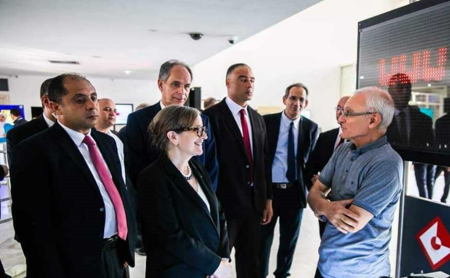
With government officials
Presenting innovation results to high-level government representatives
Presenting innovation results to high-level government representatives
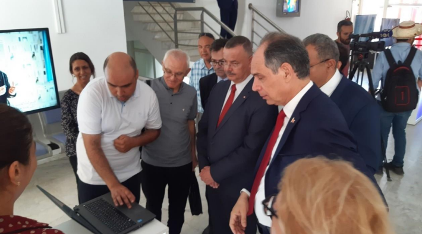
With THE ministers of teaching superior, THE minister of Health And
THE minister of education
Demonstrating research outcomes to key ministry officials
Demonstrating research outcomes to key ministry officials
Government Recognition
Ministry Collaboration
Innovation Showcase
02
Reporting turned And broadcast on national TV channel: Watania 1
Television Interview & Research Showcase
Featured television interview and research demonstration broadcast on Tunisia's national television channel Watania 1, showcasing innovative research work and laboratory achievements to a national audience.
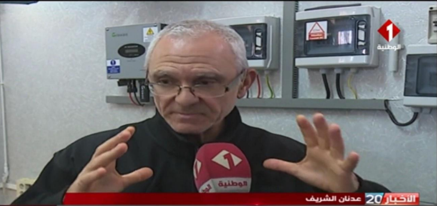
Research Equipment Display
Laboratory equipment and research setup featured in the television broadcast
Laboratory equipment and research setup featured in the television broadcast
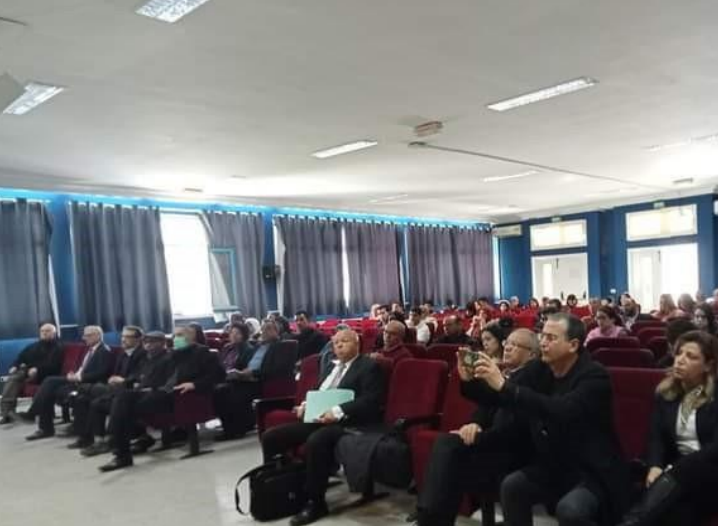
Live Television Interview
Professor presenting research achievements on national television
Professor presenting research achievements on national television
National TV Coverage
Recorded Interview
Public Outreach
Prime Time Slot
03
Reporting on Radio Young People Tunisia (Official Page)
Radio Interview & Youth Outreach Program
Featured radio interview on Radio Young People Tunisia's official page, focusing on engaging with Tunisia's youth community about innovative research and educational opportunities. This broadcast aimed to inspire young people and promote scientific research careers.
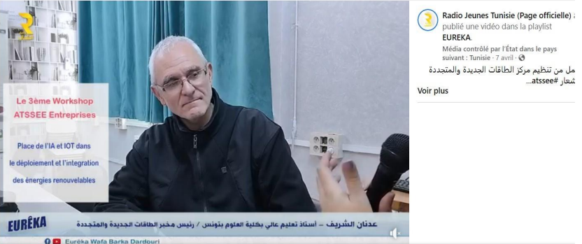
Radio Interview Session
Professor during live radio interview discussing research and youth engagement
Professor during live radio interview discussing research and youth engagement
Radio Broadcast
Youth Outreach
Social Media Coverage
Educational Focus
04
Laboratory and Projects Information
ATSSEE Laboratory Resources & Project Documentation
Comprehensive documentation of laboratory facilities and ongoing projects at ATSSEE (Advanced Technology Systems for Sustainable Energy and Environment). This includes official laboratory websites, project portfolios, and research infrastructure information showcasing the center's capabilities in renewable energy and environmental technology research.
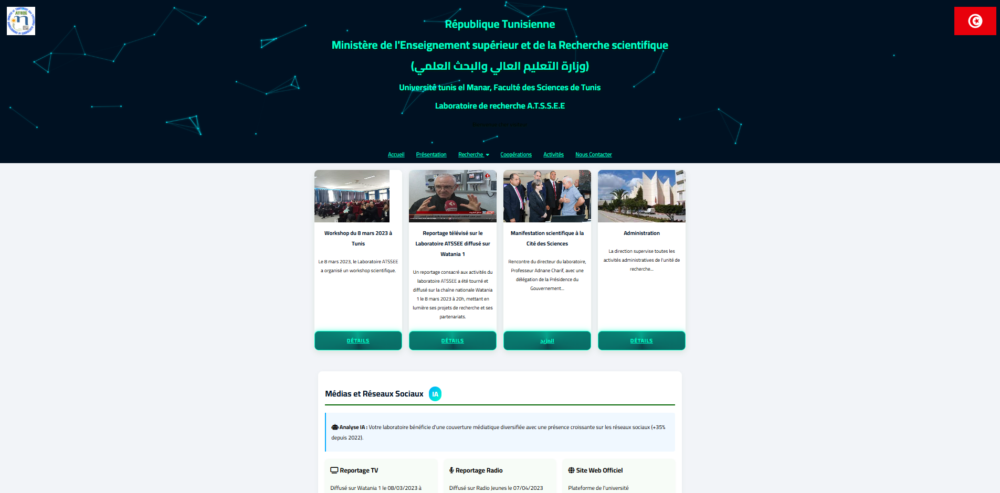
Laboratory Resources & Project Information
Official documentation showing laboratory websites and project portfolios
Official documentation showing laboratory websites and project portfolios
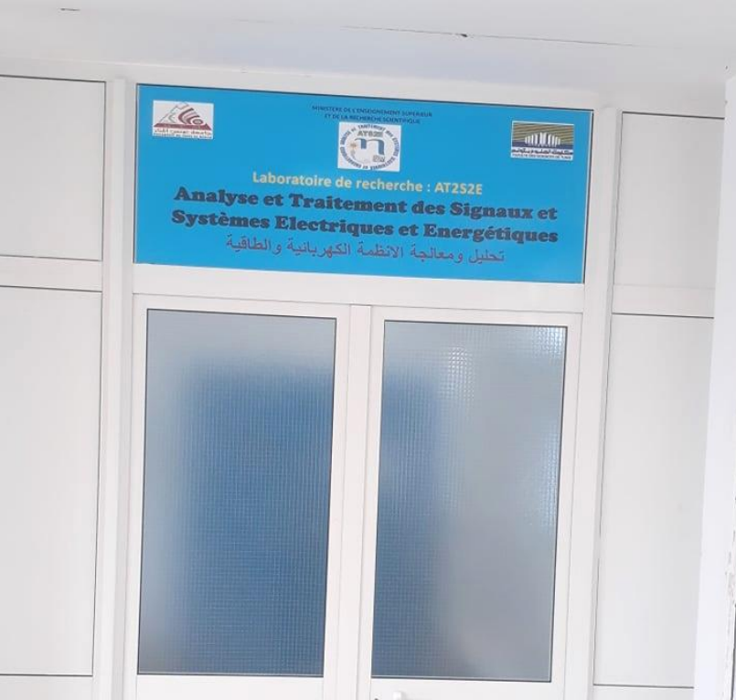
Laboratory Entrance Door
Official entrance to ATSSEE research laboratory with institutional signage
Official entrance to ATSSEE research laboratory with institutional signage
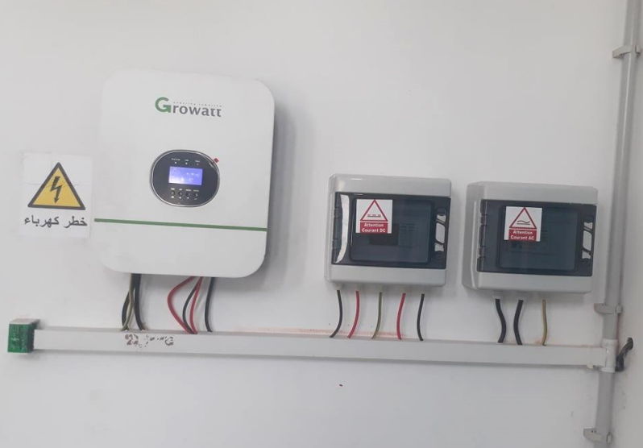
Inverters and Data Acquisition Systems
Advanced monitoring and control equipment for renewable energy research
Advanced monitoring and control equipment for renewable energy research
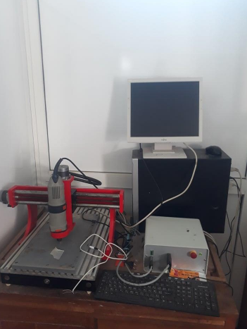
PCB Manufacturing Machine
Precision equipment for printed circuit board prototyping and production
Precision equipment for printed circuit board prototyping and production
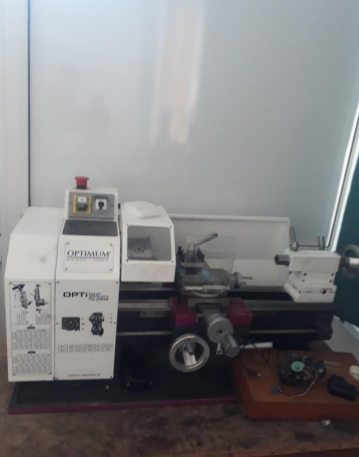
Horizontal Tower Machine
High-precision lathe for mechanical component fabrication and prototyping
High-precision lathe for mechanical component fabrication and prototyping
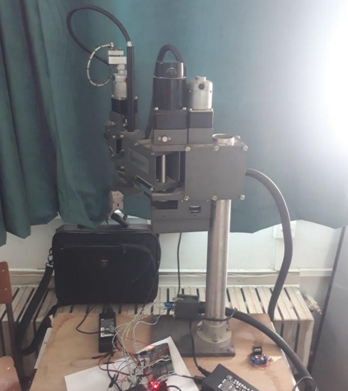
Robot with Manipulator Arm
Advanced robotic system for automated laboratory operations and precision handling
Advanced robotic system for automated laboratory operations and precision handling
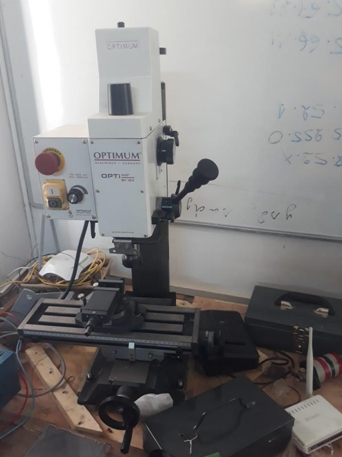
Machine Fraiseuse/Perceuse
Professional milling and drilling machine for precision mechanical fabrication
Professional milling and drilling machine for precision mechanical fabrication
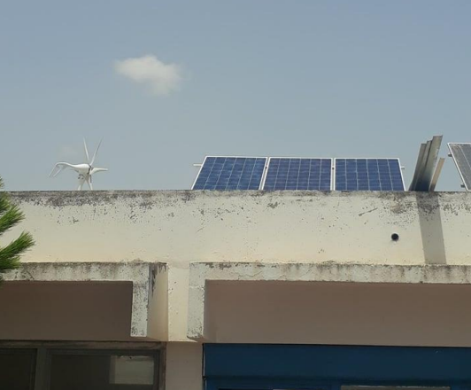
3 KW Hybrid Station: PV and Wind
Advanced renewable energy system combining solar photovoltaic and wind power generation
Advanced renewable energy system combining solar photovoltaic and wind power generation
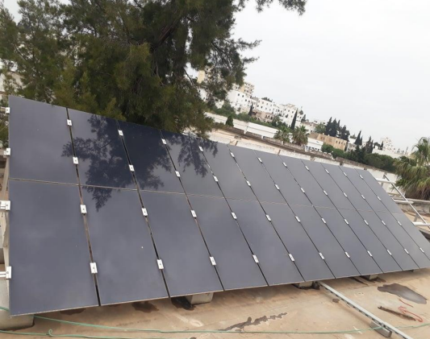
3 KW Grid Connected Amorphous PV Station
Professional grid-tied amorphous silicon photovoltaic installation for renewable energy research
Professional grid-tied amorphous silicon photovoltaic installation for renewable energy research
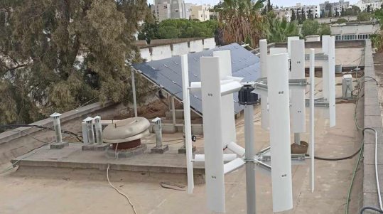
Hybrid Solar Wind Station
Advanced rooftop renewable energy installation combining solar photovoltaic panels and vertical axis wind turbines
Advanced rooftop renewable energy installation combining solar photovoltaic panels and vertical axis wind turbines
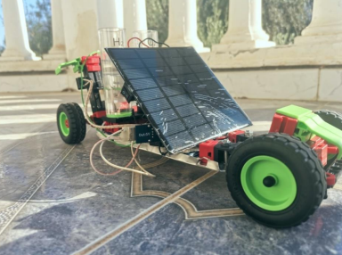
Green Hydrogen Vehicle Prototype
Revolutionary solar-powered hydrogen vehicle prototype with integrated photovoltaic panels and fuel cell technology
Revolutionary solar-powered hydrogen vehicle prototype with integrated photovoltaic panels and fuel cell technology
Hydrogen Car Demonstration
Green Hydrogen Vehicle in Action
Vehicle Demo
Clean Energy
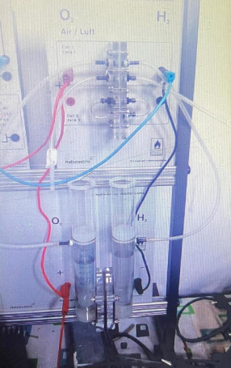
Hydrogen Fuel Cell System
Advanced electric production via hydrogen fuel cell technology for clean energy generation and vehicle propulsion
Advanced electric production via hydrogen fuel cell technology for clean energy generation and vehicle propulsion
Laboratory Facilities
Scan To Visit
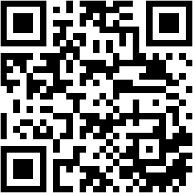
Scan this code to open the published online CV instantly.
https://adnenee.github.io/cvadnen/
Social & Association Activities